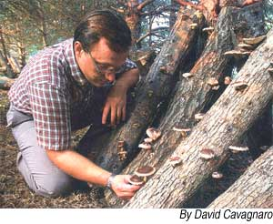

Mushrooms such as shiitake can be grown on logs outdoors. An ideal shiitake log is a 40-inch-long piece of hardwood, 4 to 6 inches in diameter, cut in late winter or early spring, with the bark left intact.